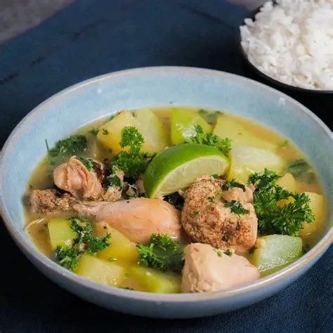

Tatak Pinoy
Tinola
A fragrant ginger-based chicken soup with papaya and leafy greens.
Ingredients
- Chicken
- Garlic, onion, ginger
- Papaya or sayote
- Malunggay or chili leaves
- Fish sauce
- Water
Cooking Procedure
- Sauté garlic, onion, and ginger.
- Add chicken until lightly browned.
- Add water/broth and simmer.
- Add papaya/sayote.
- Season with fish sauce.
- Add leafy greens before serving.